设计体系
2 张token、组件与类名还原度基准

牌桌 /play 与 /game/:id
11 张9 屏 × 纸白/夜场 · 已评审通过
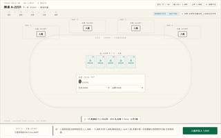
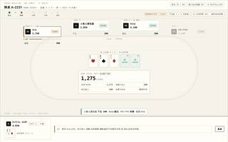
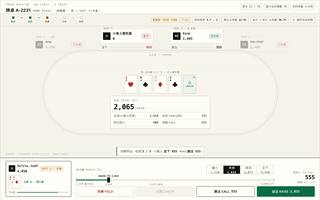
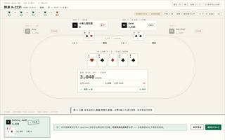
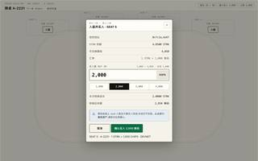
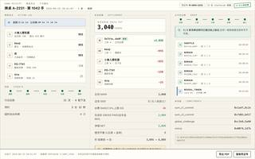
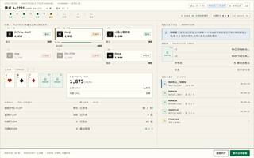
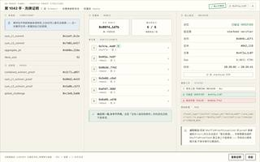
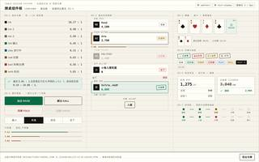
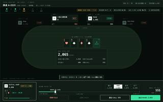
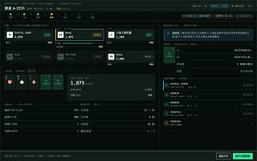
客户端其余页面
14 张React 路由 7 屏 · 文案取自 zh.json 原文
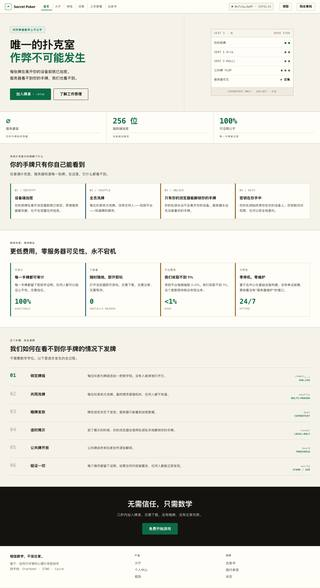
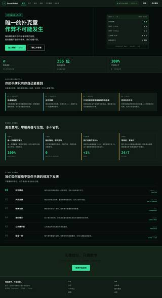
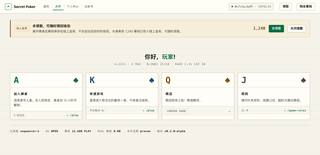
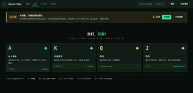
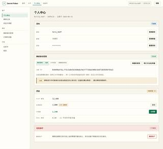
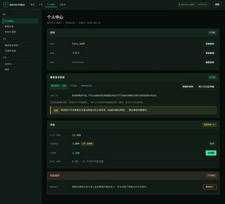
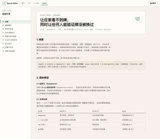
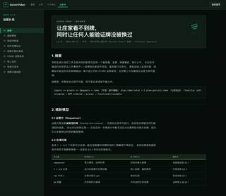
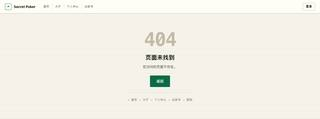
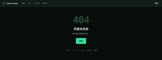
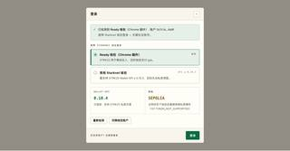
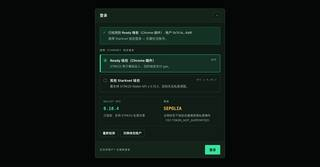
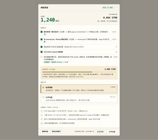
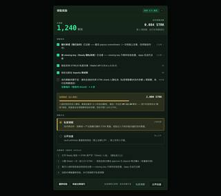
站点逐页 · 桌面 1280
41 张41 页 · 纸白底 · 真实构建产物直接换 CSS
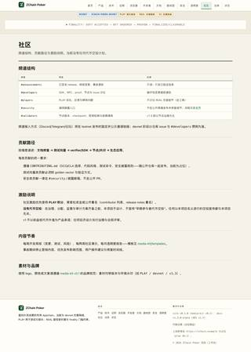
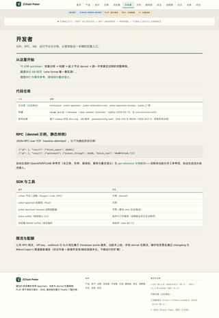
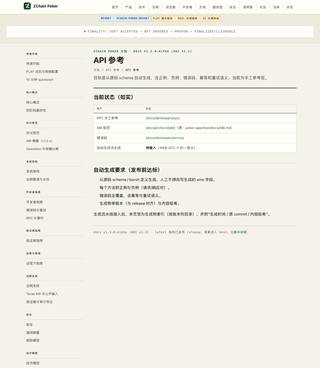
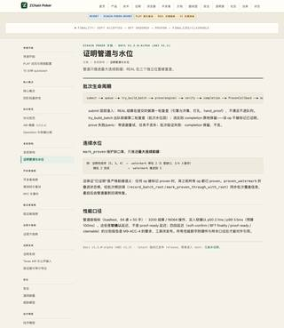
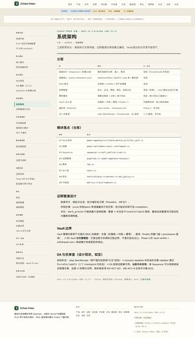
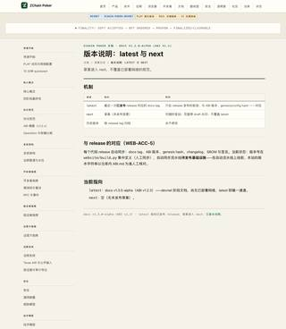
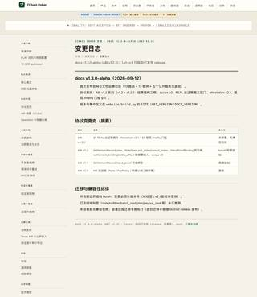
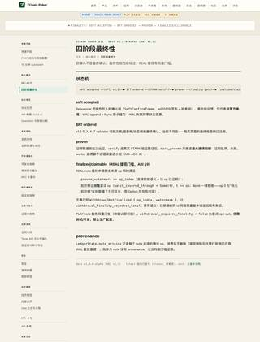
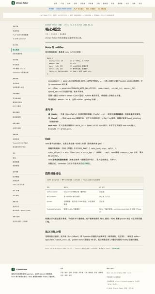
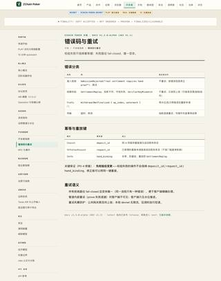
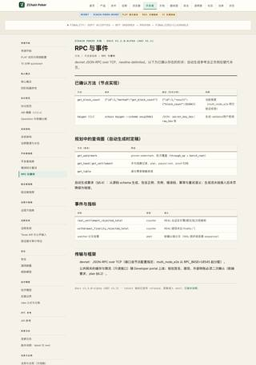
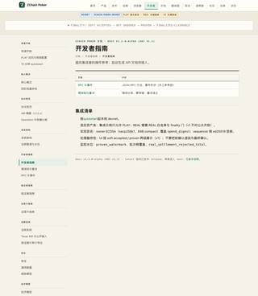
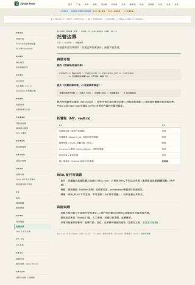
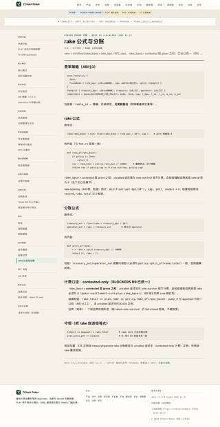
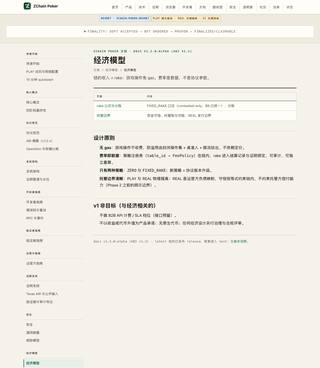
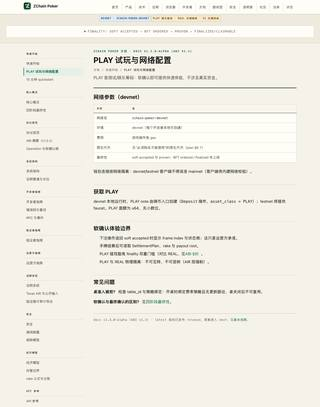
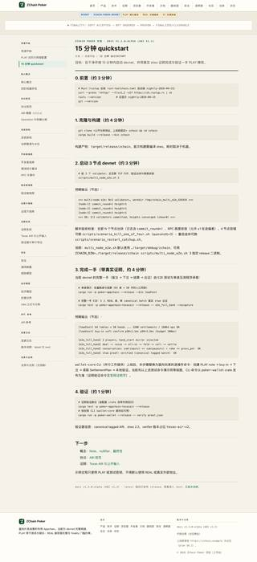
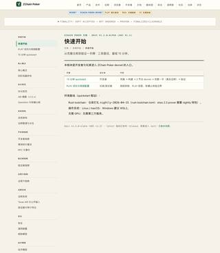
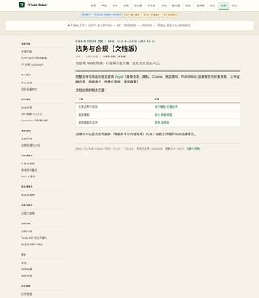
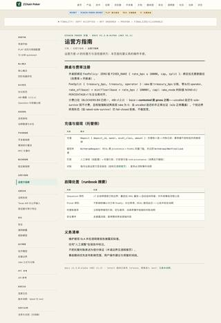
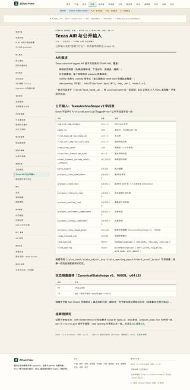
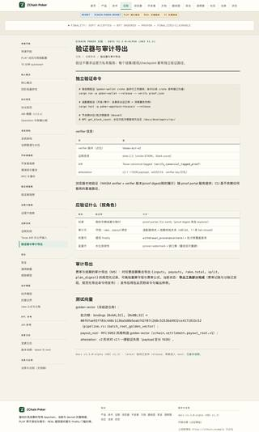
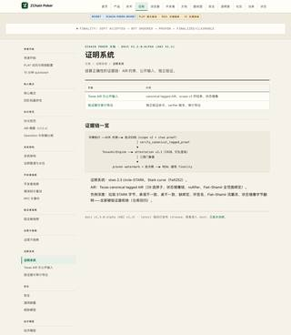
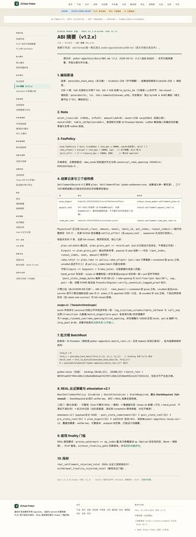
站点逐页 · 夜场底
13 张13 顶层页 · docs 与纸白同构不重复出图
站点逐页 · 窄屏 390
12 张12 顶层页 · 表格横向滚动、长标识符断行